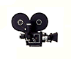
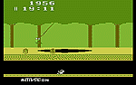
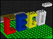
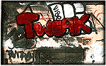

1
The Hollywood Stock Exchange
http://www.hsx.com
 It's apparent, from ridiculous trailers for films like Beverly Hills Ninja, that most Hollywood producers haven't an inkling about what the movie-going populace wants to see. If only you could pull the strings-- you'd be able to distinguish the difference between a Will Smith hit from a Charlie Sheen stinker, right? At the Hollywood Stock Exchange (HSX), you can put your money (actually, $1 million in play money) where your mouth is; this clever interactive site allows users to participate in a market simulation that involves the purchase of movie stocks and star bonds (which fluctuate in price according to the supply and demand of the Hollywood market). At press time, after hedging our bets on John Travolta's Michael and Tom Cruise's Jerry Maguire, IU decided to contact the Exchange for a little advice on our investments. (For the full story on the Hollywood Stock Exchange, read "Spotlight," page 66).
Atari 2600
http://pw2.netcom.com/~itsbroke/2600/index.html
http://www.sponsor.net/~gchance/2600Stuff/roms/
 Put down this magazine and go to these sites at once! At the first site, you'll find a program called the PC Atari Emulator--download it. At the second page, you'll find a list of hundreds of old Atari 2600 games--download the files of your choosing. The games will play on the emulator and you'll be in retro gaming heaven. All of your favorites are here, from the archaic Combat to classics like Circus Atari to arcade adaptations like Q*Bert. As a bonus, there's the whole Activision catalog and even the long-forgotten X-rated Atari game, Custer's Revenge.
Retro Magazine
http://www.retroactive.com/
What's being obsessed about over at Retro? "Anything that was ever cool," they sigh in their motto. This enchanting zine covers all of the "coolness" in the world from the first three-quarters of this century. Each issue revolves around a theme, such as "Art Deco," "Vices We Love" and "Summertime Blues & the South." The Tip Tray is a Martha Stewart-like repository of pointers on how to achieve the nirvana of yesteryear, with pieces such as "A Thrift Store Primer" and "The Modern Art of Wearing Pocket Watches." Another section, Teletype, is a media watch for all things old and cool that have been covered in the popular media. The site is a fully immersive experience--and includes RealAudio tracks of retro music that matches the issue's theme. Don't miss the message board, where retro-enthusiasts gab over Formica patterns, Hi-Ho Cherry-O, lounge music and Burma Shave. And remember: "Retro can help you to enjoy life more in the present by grooving on some of the finest of the past."
The Virtual LEGO Web Site
http://www-lego.mit.edu/~lego/LegoHome.html
 This is one the most fun VRML applications that we've seen in a long time. Relive the joy of your geeky childhood--make LEGO structures in 3-D space and fully appreciate the joy of spatial relationships. Move around, appraise your work from all angles, and then start in with another block. It's amazing how well this activity translates to the Web and how engaging it is even as a virtual rendition. Best part--no prying stubborn blocks apart!
Parascope
http://www.parascope.com
"Something Strange is Happening." That's the X-File-echoing catch phrase for Parascope, an online zine that dishes out all of the goods on conspiracy theories, unexplained occurrences, disturbing political goings-on, Bigfoot, poltergeists, declassified government documents and UFO information and non-information. Unlike most sites that pander to consumers of paranormal lore, Parascope (seeing the world very differently than a periscope) allows for a diversity of views on the extraordinary. Even so, the site's strength is still its collection of the bizarre: alien autopsy footage, pics of Mongolian Death Worms and the Waco Photo Gallery, among others. Yes, something strange is happening here...and we love it.
Pez.Org
http://www.pez.org
Not long ago, the works of famous 20th-century muralist Diego Rivera could only be found on the sides of buildings, in grossly overpriced art books and in museums. Not any more. The Diego Rivera Web site features many of his murals and paintings, and includes a biography and some personal photos of the artist and his wife, painter Frida Kahlo. Don't get us wrong--it's not like seeing the real thing, and a trip to Palacio National would make this site look like a brochure. But if you can't take off for Mexico any time soon, this little journey will do just fine. Other Rivera sites, articles and films are mentioned and summarized so you may further indulge your curiosity about the artist and his life.
Used Software Exchange
http://www.hyperion.com/usox/
Okay, hotshot, you've solved the mystery of Myst and you've explored every bloody turn in the hellish title Doom. They're as good as trash to you, but you know what they say about one man's treasure...To make that trash-to-treasure alchemy happen, you should head on over to the Used Software Exchange (USoX), a solid, practical directory that connects buyers and sellers of used programs--including games, communications software, educational programs, operating systems and more. Don't think of USoX as a store, but rather a global meeting place of people who want to conduct business deals on their own. With a fantastic search engine, a currency converter and tentative plans to expand the service to include hardware and books, this site gets high marks for usefulness, just like the local second-hand record shop.
The Columns
http://www.the-columns.com/
Every Monday, The Columns posts five new features, authored and submitted by various netizens about nearly anything and everything. While the columns featured may not directly relate to one another, they're generally well written and entertaining. Typical works include, "Why it is Wrong to Ban Land Mines," "What the Heck is Libertarianism," and "Why Men Have Nipples." So, what should you write about, should you choose to share your two cents? Whatever inspires you, so long as it's "enlightening, amusing, humorous, depressing, vitriolic, commendatory or anything else [that's] a good read."
The Weekly Freebie Companion
http://www.nb.net/~sxm/free/freebie.html
Who doesn't like free stuff? This site gathers up all of those free offers from commercial sites and presents a new collection of freebies each week. Of course, most of the free offers require users to input some valuable demographic information, but you can always use your work address, a Juno e-mail address or just outright lie if you prefer. Make sure you don't miss the link to the free jerky offer; our mouths are salivating in anticipation of all that gratis dried meat.
Tweak
http://www.tweak.com
 Playful nose pinchers, the Tweaksters publish a wry online zine whose editorial is acerbic, but utterly unfocused. It hardly matters though--the content is entertaining and the site design is pleasantly simple. The publication, up since May '96, is comprised of four sections: "Exon," stories with material that'll keep "senators up at night" (see editor Griffin Cherry's short piece on the talking condom); "Muck," described by the tweaksters as a section devoted to "naming names and kicking ass" (see the amusing parody of Nicholas Negroponte's Wired column, "Ridicholas Exaggeronte"); "First Person," a place for ordinary netizens to relate their oddball stories; and "Phone Tag," interviews with people Tweak says they could get a hold of.